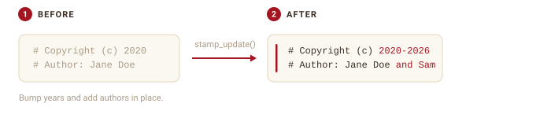
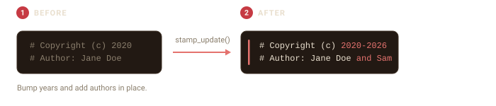
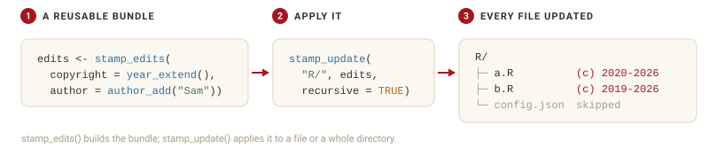
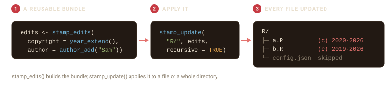

f <- tempfile(fileext = ".R")
writeLines(c(
"# Copyright (c) 2020",
"# Author: Jane Doe",
"",
"x <- 1"
), f)Headers age. Copyright years roll over and contributors join. stamp_update() edits an existing header in place, changing only the fields you name and leaving the rest of the file alone.


The common cases
Two verbs cover the everyday tasks. Here is a file with a header from a few years ago:
stamp_bump_year() extends the copyright to the current year, keeping the owner and the start year. stamp_add_author() adds a contributor without duplicating anyone already listed:
stamp_bump_year(f)
stamp_add_author(f, "Sam Smith")
cat(readLines(f)[1:2], sep = "\n")
#> # Copyright (c) 2020-2026
#> # Author: Jane Doe and Sam SmithRunning either again is safe: the year is already current and Sam is already listed, so nothing changes.
Custom updates
For anything beyond those two, stamp_update() takes named updates directly. Each value is a new value, or a function of the field’s current value. year_extend() and author_add() build those functions, and you can mix them with plain values in a single call:
g <- tempfile(fileext = ".R")
writeLines(c(
"# Copyright (c) 2018",
"# Author: Ada Lovelace",
"# License: GPL-2",
"",
"y <- 2"
), g)
stamp_update(g,
copyright = year_extend(),
author = author_add("Sam Smith"),
license = "MIT"
)
cat(readLines(g)[1:3], sep = "\n")
#> # Copyright (c) 2018-2026
#> # Author: Ada Lovelace and Sam Smith
#> # License: MITReuse a set of edits across files
stamp_edits() and stamp_update() do different jobs. stamp_edits() builds a reusable bundle of changes and touches no files on its own. stamp_update() is what applies changes to files, whether you pass them inline or as a bundle.
Bundling pays off when you want the same set of edits applied in more than one place. The bundle also prints what it will change:
edits <- stamp_edits(
copyright = year_extend(),
author = author_add("Sam Smith")
)
edits
#>
#> ── Header edits ──
#>
#> • copyright: extend the copyright year
#> • author: add "Sam Smith"Update a whole directory
stamp_update() and the verbs accept a directory as well as a file. Given a directory, they update every file that already has a header and leave the rest alone. Use recursive = TRUE to include subdirectories.


project <- file.path(tempdir(), "project")
dir.create(file.path(project, "R"), recursive = TRUE, showWarnings = FALSE)
writeLines(c("# Copyright (c) 2020", "# Author: Jane Doe", "", "a <- 1"),
file.path(project, "R", "a.R"))
writeLines(c("# Copyright (c) 2019", "# Author: Ada Lovelace", "", "b <- 2"),
file.path(project, "R", "b.R"))
stamp_update(project, edits, recursive = TRUE)Every stamped file in the tree now carries the new year and author, from a single call.
Preview and back up
Updating is editing, so the same action choices from stamping apply. action = "dryrun" shows what would change without touching the file:
h <- tempfile(fileext = ".R")
writeLines(c("# Copyright (c) 2019", "# Author: Ada Lovelace", "", "y <- 2"), h)
stamp_bump_year(h, action = "dryrun")
#>
#> ── Update Preview for: /tmp/RtmpGGe2Mm/file1f3442520186.R ──────────────────────
#>
#> ── Updated fields: ──
#>
#> • copyright: 2019-2026
#> • author: Ada Lovelace
#>
#> ── Header location: ──
#>
#> Lines 1 to 2
#>
#> ── File properties: ──
#>
#> • Encoding: UTF-8
#> • Line ending: LF
#> • Read-only: Noaction = "backup" writes a .bck copy before editing.
When a field is not there
The update functions only touch fields they can find. If you ask to update a field the header does not contain, filestamp warns instead of silently doing nothing, so a typo or a missing field does not pass unnoticed:
k <- tempfile(fileext = ".R")
writeLines(c("# Copyright (c) 2021", "# Author: Grace Hopper", "", "z <- 3"), k)
stamp_update(k, license = "MIT")
#> Warning: Could not locate 1 requested field in the header of
#> '/tmp/RtmpGGe2Mm/file1f348815775.R'.
#> ! Not updated: license.The file is left unchanged, because there was no license line to update. Add one by re-stamping with a template that includes it, or edit the file directly.